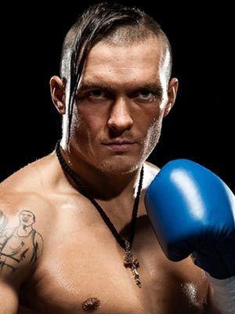

Олександр Олександрович Усик - народ. 17 січня 1987, Сімферополь професійний український боксер. Олімпійський чемпіон (2012), чемпіон світу (2011), чемпіон Європи (2008), багаторазовий чемпіон України. Заслужений майстер спорту України. Олександр Усик 2017 р. піднявся на першу сходинку рейтингу найкращих боксерів в першій важкій вазі за версією авторитетного боксерського видання «The Ring». 21 липня 2018 року став абсолютним чемпіоном світу в першій важкій вазі, перемігши осетина Мурата Гассієва, який представляв Росію, у фіналі Всесвітньої боксерської суперсерії WBSS. Олександр — перший українець, який отримав титул абсолютного чемпіона світу.